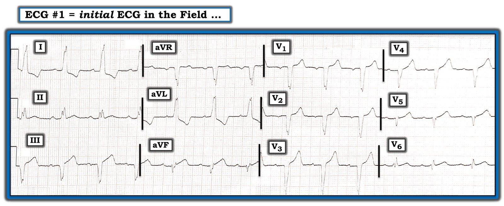
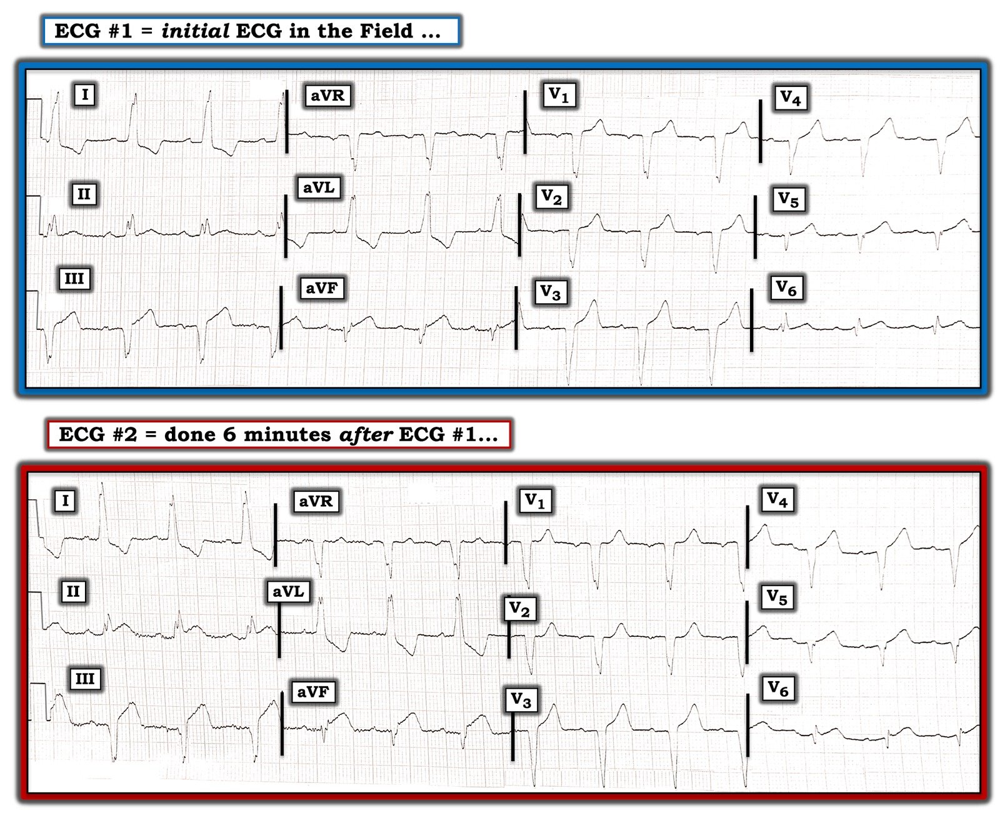

17/09/2020 — Phụ nữ 60 mấy tuổi bị đau ngực và QRS rộng
Bản dịch tiếng Việt của bài "A 60-something Woman with Chest Pain and a Wide QRS" – Dr. Smith’s ECG Blog. Giữ nguyên toàn bộ 3 hình ảnh của bản gốc.
===================================
BÌNH LUẬN CỦA TÔI, bởi KEN GRAUER, MD (17/9/2020):
===================================
Bệnh nhân hôm nay là một phụ nữ 60 mấy tuổi, trước đó khỏe mạnh, đến viện vì đau ngực khởi phát khi đang dự một buổi tiệc chiêu đãi. Điện tâm đồ 12 chuyển đạo ban đầu của bà, do nhân viên cấp cứu ngoài viện ghi tại hiện trường, được trình bày ở Hình 1.
- BẠN sẽ diễn giải điện tâm đồ 12 chuyển đạo này như thế nào?
- Có nên kích hoạt phòng thông tim (cath lab) không?


(Bình luận của Smith nằm ở cuối bài)
============================
SUY NGHĨ CỦA TÔI về điện tâm đồ #1: Điện tâm đồ #1 có nhịp xoang đều với tần số ~80/phút. Khoảng PR ở giới hạn trên của bình thường (tức là không dài quá 0,21 giây) — nhưng phức bộ QRS rõ ràng giãn rộng.
- Lý do QRS giãn rộng ở điện tâm đồ #1 là có LBBB hoàn toàn (blốc nhánh trái — Left Bundle Branch Block). LBBB được chẩn đoán khi có QRS giãn rộng kèm sóng R một pha ở các chuyển đạo bên (như thấy ở đây tại chuyển đạo I và aVL) + QRS âm là chủ yếu ở các chuyển đạo trước (như thấy ở đây tại chuyển đạo V1 và các chuyển đạo ngực tiếp theo). LƯU Ý: Thường thì với LBBB — sóng R một pha cũng thấy ở chuyển đạo V6, nhưng ở đây thì không (tôi sẽ bàn chi tiết lý do ngay sau đây).
- Vượt ra ngoài phần cốt lõi: Điều đáng chú ý là QRS dường như không giãn rộng ở các chuyển đạo V5, V6 — và có lẽ cả ở chuyển đạo aVF. Tuy nhiên, nhìn vào độ rộng QRS ở các chuyển đạo aVR và aVL (ghi đồng thời với chuyển đạo aVF) — và độ rộng QRS ở chuyển đạo V4 (ghi đồng thời với các chuyển đạo V5 và V6) — sẽ xác nhận rằng phức bộ QRS thực sự rộng trên toàn bộ bản ghi điện tâm đồ #1. Chỉ là một phần của phức bộ QRS ở những chuyển đạo trông hẹp kia nằm trên đường đẳng điện. Điều này nhấn mạnh tầm quan trọng của việc luôn luôn đo các khoảng ở chuyển đạo trông rộng nhất!
Quay lại với Cách tiếp cận hệ thống của chúng tôi đối với điện tâm đồ #1:
Vì có LBBB ở điện tâm đồ #1 — chúng ta cần điều chỉnh tương ứng các tiêu chuẩn diễn giải khoảng QTc, trục, lớn các buồng tim và phát hiện bất thường QRST. Ý tôi là các tiêu chuẩn chẩn đoán điện tâm đồ thông thường sẽ khác đi khi có rối loạn dẫn truyền. Điều này đặc biệt đúng với LBBB hoàn toàn — trong đó vectơ khử cực thất ban đầu bị thay đổi, vì phía trái của vách liên thất không thể được hoạt hóa nữa (do đường đi của nhánh trái chung chạy dọc xuống phía trái của vách).
- Khoảng QTc ở điện tâm đồ #1 có vẻ hơi kéo dài. Tôi đo được QT = 400 ms ở chuyển đạo V3, hiệu chỉnh ra QTc ~450-460 ms, với tần số tim ~80/phút. Dù vậy, do có rối loạn dẫn truyền — QTc kéo dài nhẹ như vậy không có gì bất ngờ (và không ảnh hưởng đáng kể đến quyết định xử trí). QTc hầu như luôn kéo dài khi có LBBB.
- Vì LBBB làm thay đổi trình tự khử cực thất trái — các tiêu chuẩn điện thế thông thường cho LVH (vốn được xây dựng từ những bệnh nhân có thời gian QRS bình thường) không còn giá trị. Tiêu chuẩn tôi ưa dùng để chẩn đoán LVH trên điện tâm đồ khi có kèm LBBB — là sự hiện diện của sóng S rất sâu ở các chuyển đạo trước (tức là ≥25-30 mm ở chuyển đạo V1 hoặc V2 hoặc V3). Điều này rõ ràng không có ở điện tâm đồ #1.
- Khái niệm “trục QRS” có rất ít ý nghĩa khi có LBBB.
- Sự hiện diện của sóng Q (hoặc phức bộ QS) ở các chuyển đạo dưới và trước khó diễn giải hơn nhiều khi có LBBB. Đó là vì (như tôi đã nêu ở trên) — vectơ khử cực thất ban đầu bị thay đổi khi có LBBB. Do đó — sóng Q mà ta thấy ở chuyển đạo III của điện tâm đồ #1 — và các phức bộ QS ở các chuyển đạo trước V1, V2 và V3 không chỉ điểm nhồi máu — vì sóng Q thường gặp ở tất cả các chuyển đạo này trong LBBB không biến chứng.
- ĐIỂM THEN CHỐT (PEARL) #1: Bình thường sẽ không bao giờ có sóng Q ở chuyển đạo I hay chuyển đạo V6 trong LBBB đơn thuần. Đó là vì blốc nhánh trái (nhánh chạy dọc xuống phía trái của vách) làm đảo ngược hướng hoạt hóa vách bình thường là từ trái sang phải. Do đó, khi có LBBB — hoạt hóa vách diễn ra từ phải sang trái — nghĩa là hoạt hóa điện ban đầu của thất trái đi về phía thất trái, lẽ ra phải tạo ra sóng R dương trên điện tâm đồ. NẾU có bao giờ bạn thấy sóng Q ban đầu ở hoặc chuyển đạo I hoặc chuyển đạo V6 khi có LBBB — điều này gợi ý mạnh rằng đã có nhồi máu vách vào một thời điểm nào đó!
- Trong bối cảnh của ĐIỂM THEN CHỐT #1 — tôi diễn giải phức bộ rsr’ nhỏ xíu ở chuyển đạo V6 của điện tâm đồ #1 là một “tương đương” sóng Q ở bệnh nhân LBBB này. Như ta sẽ thấy ngay sau đây ở điện tâm đồ #2 — một sóng Q nhồi máu rõ ràng xuất hiện chỉ vài phút sau đó ở chuyển đạo V6.
- Vượt ra ngoài phần cốt lõi: Với LBBB đơn thuần (trong đó chưa có nhồi máu) — các phức bộ QS hoặc rS chủ yếu âm ở các chuyển đạo trước sẽ chuyển tiếp (tức là trở nên dương nhiều hơn âm) tại một điểm nào đó giữa các chuyển đạo V4-V5-V6. Ít gặp (dù không phải là không thể) trường hợp LBBB mà hoàn toàn không có sóng R dương nào cho đến tận chuyển đạo V5 ở phía bên. Dù vậy — phức bộ QRS âm ở chuyển đạo V5 của điện tâm đồ #1 nổi bật rõ rệt vì ngoài việc âm hoàn toàn, phức bộ QS ở chuyển đạo V5 còn có một khía tận cùng — và ĐIỀU ĐÓ rõ ràng là bất thường đối với LBBB đơn thuần. Trong bối cảnh hình ảnh “tương đương” sóng Q mà ta thấy ở chuyển đạo V6 — tôi diễn giải phức bộ QRS âm hoàn toàn kèm khía tận cùng ở chuyển đạo V5 cũng là một “tương đương” sóng Q nhồi máu.
Diễn giải thay đổi sóng ST-T khi có LBBB:
Ngoài việc thay đổi trình tự khử cực thất trái — LBBB hoàn toàn cũng làm thay đổi trình tự tái cực thất. Do đó, chúng ta cần thay đổi cách tiếp cận khi diễn giải ý nghĩa của thay đổi sóng ST-T khi có LBBB — vì các chuyển đạo trước thường cho thấy ST chênh lên kèm sóng T cao, nhọn — còn các chuyển đạo bên thường cho thấy ST-T chênh xuống, đơn giản là do LBBB.
- LƯU Ý: Vì LBBB làm thay đổi trình tự tái cực thất trái — có thể khó nhận ra tắc mạch vành cấp trên điện tâm đồ hơn.
- Điểm MẤU CHỐT: Vẫn còn nhiều bác sĩ tim mạch tin rằng bạn không thể nhận ra nhồi máu cơ tim cấp khi có LBBB. Những bác sĩ tim mạch đó đã sai. Như chúng tôi đã chứng minh nhiều lần trên Dr. Smith’s ECG Blog — hoàn toàn có thể nhận ra các dấu hiệu cấp tính trên điện tâm đồ ở một tỷ lệ đáng ngạc nhiên các trường hợp bất chấp sự hiện diện của LBBB.
Chúng ta mang ơn Dr. Smith vì đã xây dựng Tiêu chuẩn Smith-Sgarbossa cải biên để đánh giá thay đổi sóng ST-T ở bệnh nhân đau ngực có LBBB. Tôi mô tả và minh họa chi tiết cách tôi vận dụng các tiêu chuẩn này trong Bình luận của tôi ở cuối bài ngày 16 tháng Mười Hai năm 2019 trên Dr. Smith’s ECG Blog. Dr. Smith minh họa cách đo các thông số này bằng hình phóng to trong bài ngày 21 tháng Mười Hai năm 2015 của ông.
- Dù tôi chắc chắn thấy Tiêu chuẩn Smith-Sgarbossa cải biên hữu ích khi đánh giá các bản ghi LBBB ở bệnh nhân đau ngực — tôi còn ưa dùng thêm một cách tiếp cận định tính dựa trên hình dạng sóng ST-T thay vì các số đo. Vì cách tiếp cận định tính của tôi không dùng số đo — tôi hoàn toàn thừa nhận rằng cách tiếp cận này dựa vào kinh nghiệm. Nó đã mang lại hiệu quả tốt đối với tôi trong nhiều năm …
- ĐIỂM THEN CHỐT (PEARL) #2: Dù Tiêu chuẩn Smith-Sgarbossa có thể hữu ích đến đâu — tôi thích tìm những thay đổi sóng ST-T mà tôi biết là không bình thường ở bệnh nhân có LBBB. Vì vậy, dù phức bộ QS ở chuyển đạo III của điện tâm đồ #1 không nhất thiết bất thường khi có LBBB — lẽ ra không được có ST chênh lên ở các chuyển đạo III và aVF với hình dạng như ta thấy ở đây. Ở chuyển đạo III — điểm J rõ ràng chênh lên 2 mm — đoạn khởi đầu ST thẳng — và sóng T cao không tương xứng so với biên độ phức bộ QS ở chuyển đạo này. Ở chuyển đạo aVF — càng dễ nhận ra sóng T tối cấp, cao không tương xứng so với phức bộ QRS rất nhỏ ở chuyển đạo này. Ngoài ra còn có ST chênh lên 1 mm ở chuyển đạo aVF.
- Tiếp tục với cách tiếp cận định tính của tôi ở điện tâm đồ #1 — còn có một sóng T tối cấp ở chuyển đạo V5 (tức là, sóng T ở V1 cao không tương xứng so với phức bộ QRS nhỏ ở chuyển đạo này [người dịch: nguyên văn ghi “V1”, nhiều khả năng là lỗi đánh máy, ý là V5].).
- Xét đến “tương đương” sóng Q mà ta đã ghi nhận trước đó ở chuyển đạo V6 — sóng T mà ta thấy ở chuyển đạo này cũng tối cấp (tức là, bình thường sóng ST-T sẽ âm ở các chuyển đạo bên khi có LBBB).
Những nét hoàn thiện cuối cùng về điện tâm đồ #1: Nếu tôi không nhận ra các dấu hiệu chắc chắn bất thường nêu trên ở điện tâm đồ #1 — có lẽ tôi đã không xác định được các dấu hiệu bất thường ở những chuyển đạo còn lại. Nhưng vì tôi đã nhận ra các “tương đương” sóng Q ở chuyển đạo V5 và V6 — và vì tôi biết rằng sóng ST-T ở các chuyển đạo III, aVF và V5, V6 đều bất thường ở bệnh nhân LBBB này — tôi đã xem lại các chuyển đạo còn lại:
- Ngoài sóng ST-T âm ở các chuyển đạo bên I và aVL (đây là biểu hiện đi kèm bình thường của LBBB đơn thuần) — còn có điểm J chênh xuống ~2 mm ở cả hai chuyển đạo này. Trong bối cảnh ST chênh lên bất thường mà ta thấy ở các chuyển đạo III và aVF — tôi diễn giải hình ảnh điểm J chênh xuống soi gương này là một thay đổi soi gương (reciprocal) ở bệnh nhân LBBB này, với điện tâm đồ có giá trị chẩn đoán STEMI thành dưới cấp. Và, trong bối cảnh chẩn đoán STEMI thành dưới cấp — tôi rất nghi ngờ rằng sóng ST-T ở chuyển đạo dưới còn lại (tức là ở chuyển đạo II) — có lẽ cũng bất thường (tức là có dấu hiệu sớm của đỉnh sóng T phình rộng ra trước khi trở thành tối cấp rõ rệt).
- Dù ST chênh lên kèm sóng T dương cao ở các chuyển đạo V1, V2 và V3 của điện tâm đồ #1 là điều không bất ngờ với LBBB đơn thuần — trong bối cảnh có sóng T tối cấp ở các chuyển đạo V5 và V6, tôi nghĩ sóng T ở chuyển đạo V4 lân cận nhiều khả năng cũng tối cấp (tức là cao hơn, đỉnh đầy đặn hơn và đáy rộng hơn mức lẽ ra phải có một cách không tương xứng).
- ĐIỀU CỐT LÕI: Để trả lời các Câu hỏi tôi đặt ra ở đầu ca này — Ở một phụ nữ 60 mấy tuổi bị đau ngực mới khởi phát — bất chấp sự hiện diện của LBBB (và ngay cả khi không có bản ghi cũ để so sánh) — điện tâm đồ #1 có giá trị chẩn đoán OMI dưới–bên cấp. Do đó — lẽ ra đã có thể kích hoạt phòng thông tim dựa trên Bệnh sử đã nêu và điện tâm đồ #1.
Ca bệnh tiếp diễn: Điện tâm đồ ban đầu được truyền đến bác sĩ khoa cấp cứu (ED) tại bệnh viện. Trên đường vận chuyển — điện tâm đồ #2 được ghi khoảng 6 phút sau điện tâm đồ #1 (Hình 2). Khi xem cả hai bản ghi trong Hình 2 — đội cấp cứu ngoài viện và bác sĩ khoa cấp cứu đã kích hoạt phòng thông tim ngoài giờ. Tuy nhiên, việc kích hoạt phòng thông tim đã bị bác sĩ can thiệp trực hủy bỏ — người này cho rằng không thể chẩn đoán STEMI cấp vì có LBBB.
- Điện tâm đồ #2 có giúp ích cho việc đánh giá ca này của BẠN không?
- BẠN có đồng ý với quyết định kích hoạt phòng thông tim của đội cấp cứu ngoài viện và bác sĩ khoa cấp cứu không? — HAY — BẠN đồng ý với bác sĩ can thiệp khi hủy kích hoạt phòng thông tim?


SUY NGHĨ CỦA TÔI về các điện tâm đồ liên tiếp ở Hình 2: Nếu còn nghi ngờ về việc có nên kích hoạt phòng thông tim dựa trên điện tâm đồ #1 hay không — thì quyết định kích hoạt phòng thông tim phải là điều không thể bàn cãi sau khi xem điện tâm đồ #2.
- Mức ST chênh lên ở các chuyển đạo III và aVF đã tăng rõ ở điện tâm đồ #2 so với điện tâm đồ #1 (vốn được ghi chỉ 6 phút trước đó).
- Điều mà trước đó tôi nghi là những dấu hiệu sớm nhất của sóng T tối cấp ở chuyển đạo II — nay đã tiến triển thành ST chênh lên với đỉnh sóng T đầy đặn hơn nhiều so với mức lẽ ra phải có.
- Mức điểm J chênh xuống ở các chuyển đạo bên cao I và aVL đã tăng so với điện tâm đồ #1. Ngoài ra, hình dạng của đoạn ST chênh xuống ở chuyển đạo aVL đã thẳng ra — nên giờ đây nó phản ánh rõ ràng một hình ảnh đối nghịch soi gương hoàn hảo của ST chênh lên ở chuyển đạo III — điều này xác nhận rằng đây thực sự là thay đổi sóng ST-T soi gương của một STEMI thành dưới cấp.
- Tinh tế: Bạn có nhận thấy ở điện tâm đồ #2 có sự giảm mức ST chênh lên tại điểm J, kèm thay đổi hình dạng của sóng ST-T ở các chuyển đạo V1 và V2 không? Các chuyển đạo V1 và V2 chắc chắn không có hình dạng mà lẽ ra chúng phải có trong LBBB đơn thuần. Trong bối cảnh mọi thay đổi khác đang diễn ra — hình dạng thay đổi này ở các chuyển đạo V1 và V2 của điện tâm đồ #2 cho thấy tổn thương thành sau cấp!
- Cuối cùng, ở các chuyển đạo ngực bên — giờ đã có sóng Q rõ ràng ở chuyển đạo V6, và sóng ST-T tối cấp ở chuyển đạo này nay đã chênh lên rõ. Các phức bộ QS và sóng ST-T tối cấp ở các chuyển đạo V4 và V5 vẫn gần như không đổi, và vẫn bất thường rõ rệt.
- ĐIỀU CỐT LÕI: Điện tâm đồ #1 và #2 có giá trị chẩn đoán LBBB kèm STEMI dưới-sau-bên cấp diện rộng đang tiếp tục tiến triển (tức là thay đổi động) trong khoảng thời gian ngắn 6 phút giữa thời điểm ghi 2 bản ghi này. Điều này nhấn mạnh giá trị chẩn đoán của việc ghi lại điện tâm đồ thường xuyên.
KẾT LUẬN của ca bệnh: Cuối cùng bác sĩ can thiệp đã đưa bệnh nhân vào phòng thông tim. RCA bị tắc 100%, và đã được đặt stent.
================
LƯU Ý: Xin chân thành CẢM ƠN Emmanuel Reisman (New York) đã chia sẻ các bản ghi và ca bệnh này với chúng tôi!
================

Bình luận nhanh của Smith:
Ken thân mến,
Ca bệnh tuyệt vời và phần bàn luận tuyệt vời!
Tiêu chuẩn Sgarbossa cải biên chỉ có độ nhạy 84% (nếu dùng ngưỡng 20%) trong các nghiên cứu của chúng tôi (nghiên cứu thẩm định của Meyers), và nếu áp dụng trên một nhóm liên tiếp các bệnh nhân đau ngực có LBBB thì có lẽ còn thấp hơn. Vì vậy, quả thật chúng ta cần nhìn xa hơn các tiêu chuẩn này để KHÔNG bỏ sót OMI khi có LBBB.
Dù vậy, điện tâm đồ ban đầu này có đáp ứng tiêu chuẩn Sgarbossa cải biên.
Ở đây, aVF có STE ngược hướng 25%. Đoạn ST là 1 mm và sóng S là 4 mm. Như vậy, có một chuyển đạo với STE ít nhất 1 mm và tỷ số 25%, nên đã đáp ứng tiêu chuẩn.
Ngay cả khi bạn đo đoạn ST là 0,75 mm, thì 0,75 chia cho 4 = 0,19 (19%), vẫn khá đặc hiệu cho OMI. Tuy nhiên, mọi số đo trong các nghiên cứu của chúng tôi đều được làm tròn đến 0,5 mm gần nhất. Vì vậy những ca như ca này lẽ ra đã được xếp loại là “STE đồng hướng 1 mm.”
Trong các nghiên cứu của chúng tôi, tỷ số ST/S tối đa trung bình của LBBB là 0,11. Tỷ số trung bình chung là 0,85, nên giá trị 0,1875 quả thực là rất cao.
Ngoài ra, chuyển đạo II có đoạn ST đồng hướng. Để dương tính theo tiêu chuẩn Sgarbossa cải biên, cần có STE đồng hướng 1 mm ở ít nhất 1 chuyển đạo. Trường hợp này không đáp ứng tiêu chuẩn đó. Tuy nhiên, chúng tôi đã thấy rằng độ đặc hiệu của STE đồng hướng 0,5 mm ở bất kỳ chuyển đạo nào là 92% (xem tài liệu tham khảo).
Vì vậy, ngay cả khi bạn chưa có kinh nghiệm nhận diện hình thái, điện tâm đồ 1 vẫn có thể được xác định là OMI bằng cách đo đạc và áp dụng Tiêu chuẩn Sgarbossa cải biên.